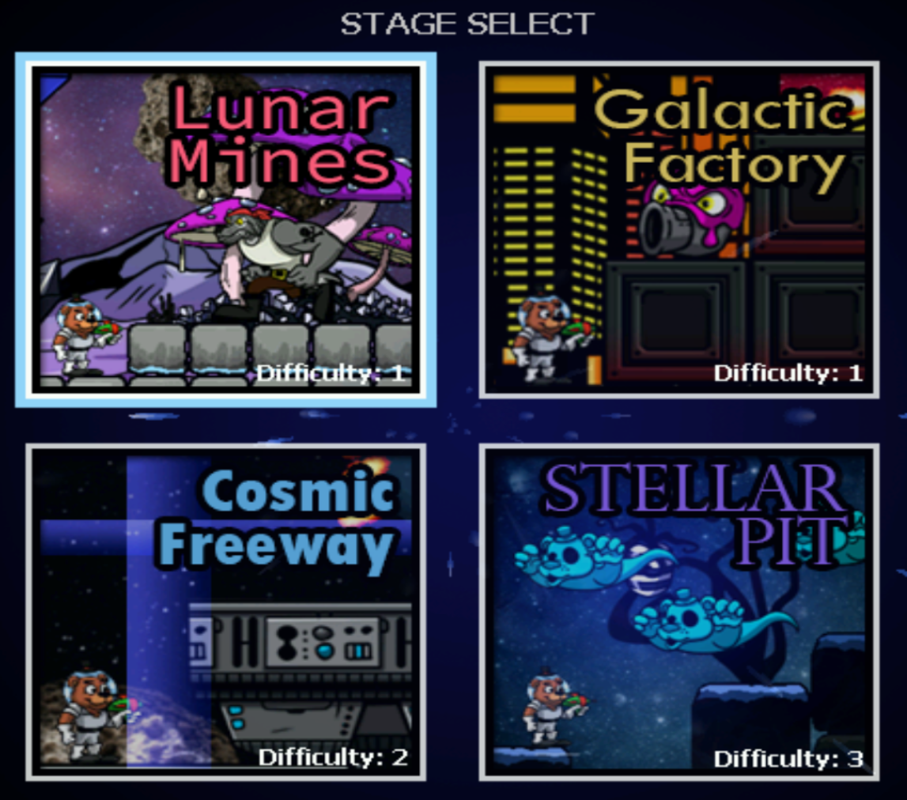
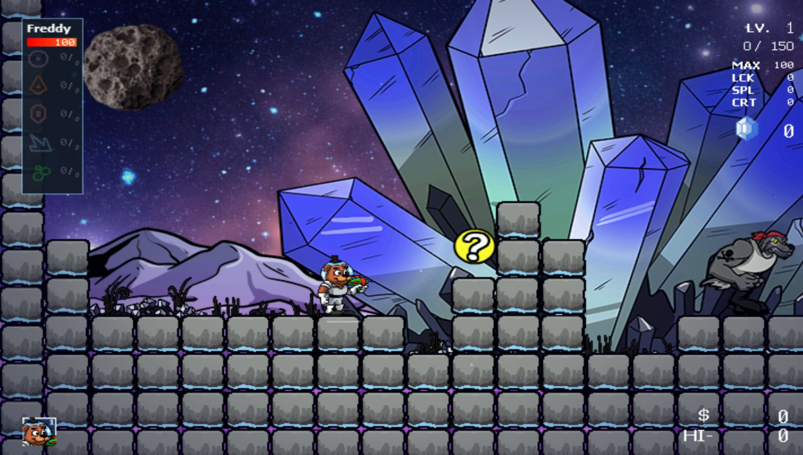

Freddy In Space é um dos jogos Spinoff da Franquia Five Nights at Freddy's também feito individualmente por Scott Cawthon.
Lançado em 3 de dezembro de 2019, o jogo mais uma vez ganhou popularidade, dessa vez por ser um jogo de ação e plataforma em que foi desenvolvido como parte de uma iniciativa de caridade para o Hospital St. Jude Children's Research.
O jogo é ambientado no espaço, com Freddy e sua equipe enfrentando uma nova ameaça. O antagonista desta vez chama-se LolzHax, que sequestrou o filho de Freddy, Freddy Jr.
Freddy e sua equipe de animatrônicos têm o objetivo de resgatá-lo e derrotar LolzHax.
Freddy In Space 2 é um Side Scroller em que os jogadores controlam Freddy e outros personagens da franquia, cada um com habilidades únicas, enquanto enfrentam inimigos e bosses em vários níveis, também é possível coletar power-ups e armas para melhorar as suas habilidades, o que facilita o jogo.
 